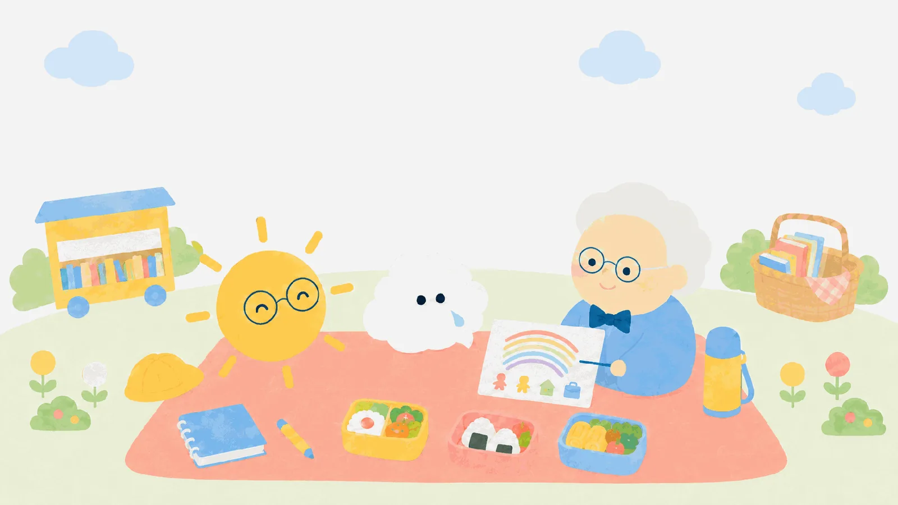

きょうのお客さま
シュロスバーグさんと
お弁当
転機が来たら、どうしたらいい？心は天気。晴れの日も、雨の日も。
その空をじっと見つめ、よりそう。
今日は、モヤンの「急な知らせ」から始まります。
このお話は、学説と史実にもとづく創作の会話です。
試験で使う正式な表現は、各用語の「試験のことば」で確認してね。
おべんとうの時間 1
転機には、3つの種類がある。
🧰シュロスバーグさんモヤン、浮かない顔だね。よし、お弁当を食べながら、いっしょに点検してみよう。

モヤンお父さんの転勤で、引っ越すかもしれないんだ。急に言われて、頭がまっしろだよ……。
🧰シュロスバーグさんそれは大きな だ。転機には3つの種類があってね。①予期していた転機(入学や就職のように、来るとわかっていたもの)、②予期していなかった転機(急な転勤や病気)、③期待していたのに起こらなかった転機——たとえば「合格すると思っていたのに、しなかった」。起こらなかったことも転機なんだよ。

サニー先生3つめは「ノンイベント」と呼ばれていて、試験でもよく問われるよ。「何も起きていないのに転機」というのが、ひっかけポイントだね。
モヤン起こらなかったことまで転機に数えてくれるんだ……。なんだか、わかってもらえた気がする。
気になる言葉を見つけたら、押してみよう。
おべんとうの時間 2
4つのSで、点検しよう。
モヤン点検って、何を点検するの？
🧰シュロスバーグさん転機を乗りこえる資源、つまり「使える持ち物」を4つ調べるんだ。①Situation(状況)——いつ、どんなタイミングか。②Self(自分)——自分の強みや経験。③Support(支え)——家族、友だち、先生、使える制度。④Strategies(戦略)——どう対処するかの作戦。頭文字をとって4S(よんエス)だよ。
サニー先生道具箱の中身をひとつずつ確かめるみたいだね。「何もない」と思っていても、点検してみると、支えや強みが必ず見つかるんだよ。
モヤンぼくの4S……。支え(Support)なら、サニー先生も、お母さんもいる！ あれ、なんだか道具箱、けっこう入ってるぞ。
🧰シュロスバーグさんその調子！ 転機は「資源がない」から怖いんじゃない。「点検していない」から怖いのさ。
おべんとうの時間 3
転機は、見方が変わるとき。
モヤンそもそも、どこからが「転機」なの？
🧰シュロスバーグさんいい質問だ。わたしは、役割・人間関係・毎日の過ごし方・自分や世界の見方——このあたりが変わる出来事を転機と考えている。引っ越しなら、学校も友だちも通学路も変わるだろう？ だから大きな転機なんだ。
サニー先生転機そのものを消すことはできないけれど、4Sの点検で「乗りこえ方」は変えられる。それがシュロスバーグさんの励ましなんだね。
モヤン引っ越しがなくなるわけじゃないけど……道具箱を持ってるって思えたら、ちょっと歩けそうだよ。
おかわりの時間
シュロスバーグさんの、おかわりばなし
シュロスバーグさん(1929〜)は、「転機の専門家」でありながら、自分自身の人生もたくさんの転機の連続だったといわれています。夫の仕事にともなう引っ越しや、思いがけない役職の話が消えてしまった経験——そうした自分の転機を見つめたことが、理論のヒントになったそうです。アメリカのキャリアカウンセリングの世界で長く活躍し、全米のキャリア発達の学会を引っぱる役目も務めました。
参考: 理論家解説記事。経歴の詳細は一次資料で最終確認のうえ更新予定。お弁当のあとの遊び
ことばのタネを、ひろって帰ろう。
5問中、好きなところまでで大丈夫。わからなかった問題は、復習バスケットが預かります。
わたしの復習バスケット
雨のしずくも、持って帰ろう。
まだ問題は入っていません。
バスケットの中身は、この端末の中だけに保存されます。
きょうのお見送り
🧰シュロスバーグさん転機が来たら、また道具箱を開けにおいで。いつでも点検につきあうよ。
つぎの先生と、ランチする ▶︎
お弁当のお話は、これからひとりずつ増えていくよ。
まだ養成講座を選んでいない方へ: 家から受けられて、休んでも振替できる7校を、30秒でしぼれます。 30秒で合う学校をしぼる ▶︎